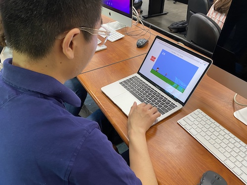

Observation 1: People enjoyed our game! I was initially not too sure how they would take it since hte game is catered for a fourht grade audience, but my peers enjoyed the game and were pretty engaged, surprised by the interactivity of the game itself.
Observation 2: Our UI needs a redesign! We were not able to update some of our UI elements: we want to make it more coherent to the sprites and general design system of both the game and the website. At this point we are sitll not too sure what direction to take, but will be working on this!
Observation 3: There is a bit of confusion when starting the game. Since navigating to the arobretum part of the capstone requires the use of the arrow keys, some user testers assumed the game was alos played with the arrow keys, rather than the space bar. The instructions update but there isn't really time for them to check it out as they are thrown right into the game.
Kimberly and I will be working on the UX and how udnerstandable the game is. Maybe we will try adding some instructions or having them always open on the side. However, we do want to keep in mind that our target audience is fourth graders, so we want to incorporate our feedback with them. We want to have more bold, vibrant colors, and we want it to be an engaging experience for the foruth graders who could potentially use itl.